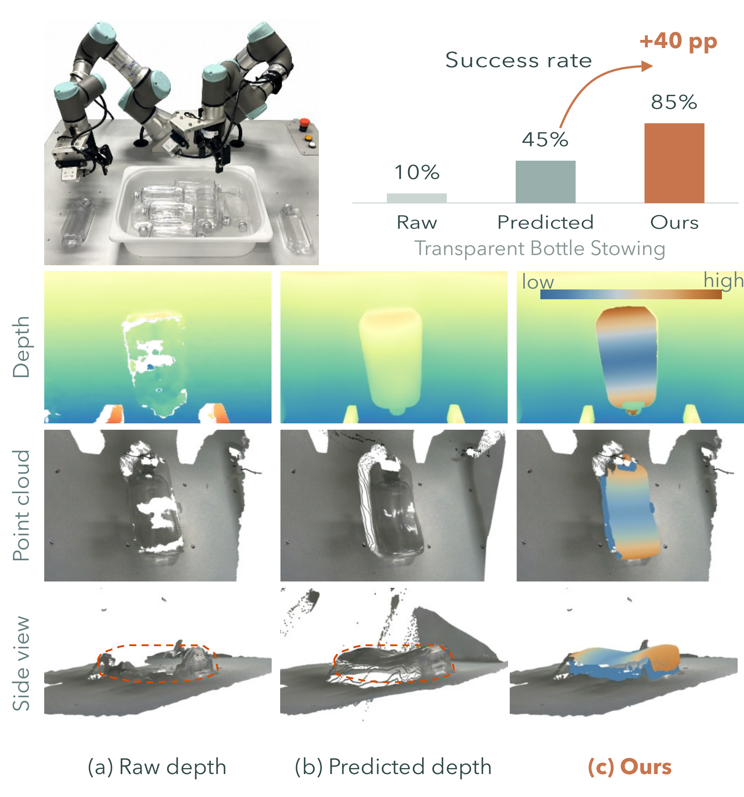
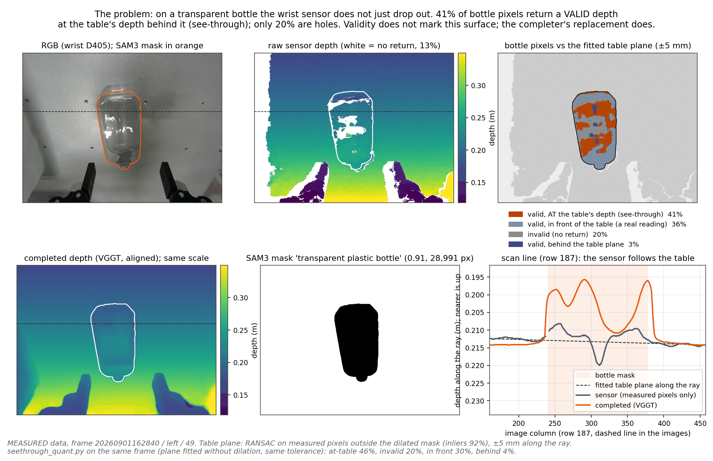
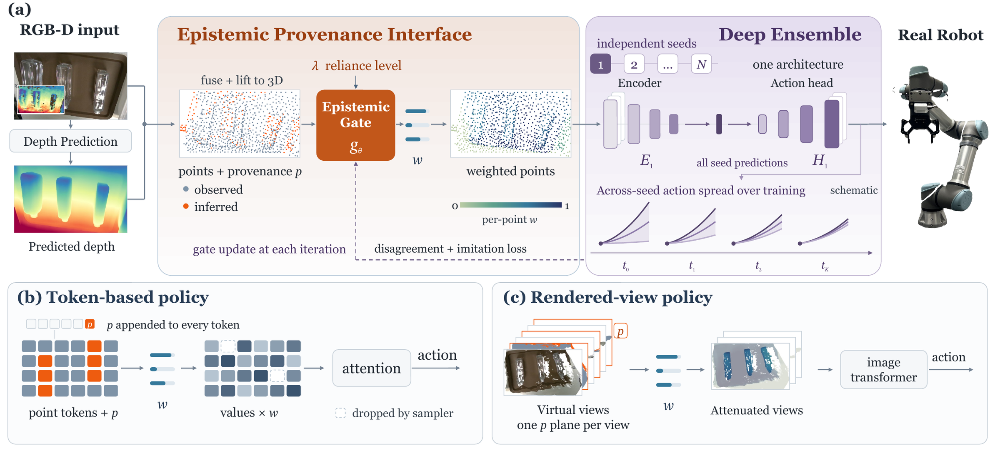
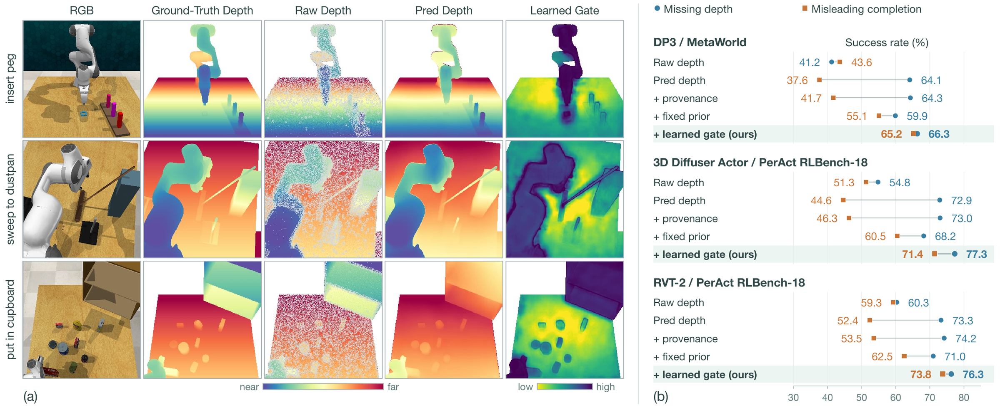
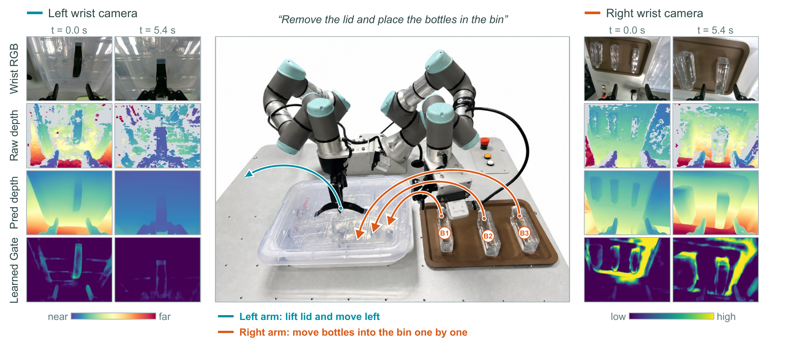

3D Manipulation · Predicted Depth · Learned Reliance
Acting on Hallucinated Geometry: Epistemic Provenance for 3D Manipulation Policies
Depth prediction recovers surfaces where sensing fails — and can invent ones that are plausible but metrically wrong. We keep every point's measured or predicted origin, learn how strongly the policy should rely on it, and leave that reliance adjustable at deployment.
Separate the geometry a policy has from how far it should trust it.
Real-world depth measurements can be missing or inaccurate, leaving 3D manipulation policies without reliable geometry. Depth prediction can recover useful surfaces, but may also introduce hallucinated geometry: plausible yet metrically incorrect shapes that mislead contact and motion. We propose a framework for learning how strongly a manipulation policy should rely on predicted geometry.
Epistemic provenance preserves whether each point was measured or predicted and initializes a learnable gate that weights its contribution to the policy. Since origin alone does not establish correctness, imitation and deep-ensemble supervision guide the gate toward weights that support demonstrated behavior and consistent predictions across independently trained policies. The framework supports point-cloud, token-based, and rendered-view policies while leaving surface coordinates unchanged.
At deployment, a single policy uses the learned weights, and an operator can adjust the influence of predicted geometry without retraining or running the ensemble. Experiments across three 3D policy architectures and real-robot transparent-object manipulation show improved success under missing and inaccurate depth compared with provenance labels alone or fixed weights.
Contributions
- We introduce epistemic provenance to preserve the measured or predicted origin of geometry in point-cloud, token-based, and rendered-view manipulation policies.
- Deep-ensemble supervision guides a provenance-initialized gate to learn how strongly each point should influence action, alongside imitation learning. The resulting weights remain adjustable at deployment without retraining or running the ensemble.
- Learned pointwise weighting improves manipulation success under missing and inaccurate depth beyond provenance labels or fixed weights, with benefits across three 3D policy architectures and real-robot transparent-object manipulation.
A plausible scene is not the same as a scene you can act in.
On transparent and reflective surfaces a sensor may return no depth at all, or apparently valid readings from the wrong surface. Depth prediction is the practical remedy, and it does restore information that manipulation needs — but visual plausibility does not guarantee the metric accuracy contact requires. A predicted surface can resemble the object while lying at the wrong depth, directing a gripper toward empty space or giving the policy an incorrect estimate of clearance.

Additional measurements
Beyond what the paper reports, we measured how often the sensor returns a surface that is not there. On one standing-bottle frame, classifying the object's 28,991 pixels against a fitted table plane puts 41% of them at the table behind the glass, 36% in front of it, 20% invalid and 3% behind; a second plane fit on the same frame gives 46% and 30%. This is scene-dependent, not a property of transparent objects: over a 20-frame corpus of a different scene the same measurement gives a median of 5%. What holds across all of them is that the geometry reaching the policy is confidently wrong at some rate, and nothing in the depth map says which points those are.

Provenance is the prior, not the verdict.
Three quantities are kept apart, because they serve different purposes: provenance records the source of a point, a learned weight regulates its contribution, and a deployment control lets an operator revise reliance on predicted geometry. A point's source is known from the depth pipeline; its usefulness has to be learned; and that learned assessment may need revision when conditions change.

The interface
Each lifted point carries a label pi: 0 for retained sensor depth, 1 for predicted depth — following the source actually used in the final depth map, including predictions that replace apparently valid sensor readings. Provenance is then a prior for a learnable epistemic gate, initialised as a zero correction to qi = 1 − αpi, so predicted points start attenuated but never excluded. Learning changes the weight wi; it never changes the factual label pi, and it never moves a coordinate — multiplying a coordinate by a weight would relocate a surface, whereas the purpose is to regulate how the policy uses the scene it receives.
Where the gate acts depends on how each backbone forms its representation. For a point-cloud policy, provenance is appended to the point input and features are weighted before pooling. For a token-based policy, provenance accompanies the scene tokens and the weights regulate both sampling and attention values — sampling matters because attenuating an attention value cannot recover a useful point that token selection already dropped. For a rendered-view policy, an aligned provenance plane and weighted point contributions act during rendering, before the view representation mixes evidence from different points.
Why an ensemble supervises the gate
Demonstrations constrain the action, not which parts of an observation should support it. Several combinations of geometric cues can reproduce the same demonstrated action, especially while sensor and predicted surfaces stay correlated through training, so a gate trained against one policy can favour evidence that that policy happens to exploit. We therefore train the gate against K independently trained policies, frozen: with fixed teachers the gate can change their predictions only by changing how the observation enters them, and the teachers cannot reduce disagreement by drifting toward one another. The objective combines imitation, a disagreement term, and a KL regulariser that makes any departure from the provenance prior costly. Agreement alone is not enough — a shared prediction can be consistently wrong — which is why disagreement complements imitation rather than replacing it.
Reliance control at deployment
The learned gate is the default. For explicit operator control, a separate provenance-based override replaces the learned field with wi = 1 − λpi: raising λ attenuates predicted points while restoring sensor-derived points to unit weight. It trades the gate's learned distinctions within each source for predictable control over the source as a whole. Intermediate settings are the meaningful ones, because predicted geometry can be both useful and misleading in the same scene — stronger suppression does not imply monotonically better manipulation. Neither path requires retraining, and the ensemble is needed only to supervise gate learning, never at runtime.
Prediction helps when depth is missing — and hurts when it is misleading.
All 50 MetaWorld tasks and all 18 RLBench tasks of the PerAct suite, across three backbones. Clean simulator depth is degraded before the observation is built: elliptical regions are removed to model persistent missing returns, then filled by inpainting; for the misleading condition the filled values alone are displaced toward the camera, producing a spurious near surface while the amount of missing depth stays fixed. RGB, demonstrated actions and simulator dynamics are untouched, and the comparisons with and without provenance use identical predicted geometry.

Predicted depth improves success when sensor measurements are missing, but becomes detrimental when inferred surfaces are misleading — a reversal showing that recovering missing geometry does not by itself ensure better control. Providing provenance alone yields only modest recovery, which suggests source labels need an explicit mechanism for regulating reliance. Fixed-prior weighting reduces the penalty from misleading completion but sacrifices performance when predictions are useful. The learned gate performs better in both conditions across all three backbones, with a smaller drop between them. Consistent with preserving useful predicted geometry while reducing sensitivity to its errors — though task success alone does not establish which points the gate suppresses. The degradation masks approximate selected failure modes; they are not an optical sensor model.
Transparent objects, real sensing, 20 trials a cell.
A single-arm UR5e workspace and a bimanual pair of UR3e arms, each wrist carrying an Intel RealSense D405. Depth defects here are not simulated: they arise from sensing transparent and reflective objects as the camera and objects move. All models stay frozen through held-out physical trials, started from matched object configurations with the method order randomised.

| Task | Raw | Baseline | Ours |
|---|---|---|---|
| Transparent bottle stowing | 10.0 | 45.0 | 85.0 |
| Grasp test-tube and pour | 30.0 | 55.0 | 75.0 |
| Petri-dish lid removal | 25.0 | 40.0 | 75.0 |
| Bimanual bottle loading | 10.0 | 30.0 | 85.0 |
Success rate (%) on tasks involving primarily transparent objects. Raw and Baseline are the same policy on raw sensor depth and on predicted depth; Ours adds provenance and learned gating. Matched demonstration splits, point budgets, action horizons and controllers; Baseline and Ours share the same depth predictions. 20 trials per task and method. Success requires completing the whole task without intervention within 60 s (single-arm) or 120 s (bimanual).
Predicted depth improves success over raw sensing on every task, consistent with recovering useful geometric cues for transparent objects. Our interface improves further on every task, which suggests that regulating reliance adds value beyond supplying predicted geometry alone. The largest gain over the predicted-depth baseline is bimanual loading, where lid removal and repeated bottle transfers must all succeed — suggesting a benefit from managing unreliable geometry across successive actions, although task-level success rates do not isolate which stage benefits most.
Limitations
Provenance records origin rather than correctness, and independently trained policies can share the same errors. Neither source labels nor ensemble agreement guarantees that a surface is accurate or suitable for physical interaction. Weighting changes how geometry contributes to the policy, but cannot repair incorrect surfaces or recover information absent from both measurements and predictions.